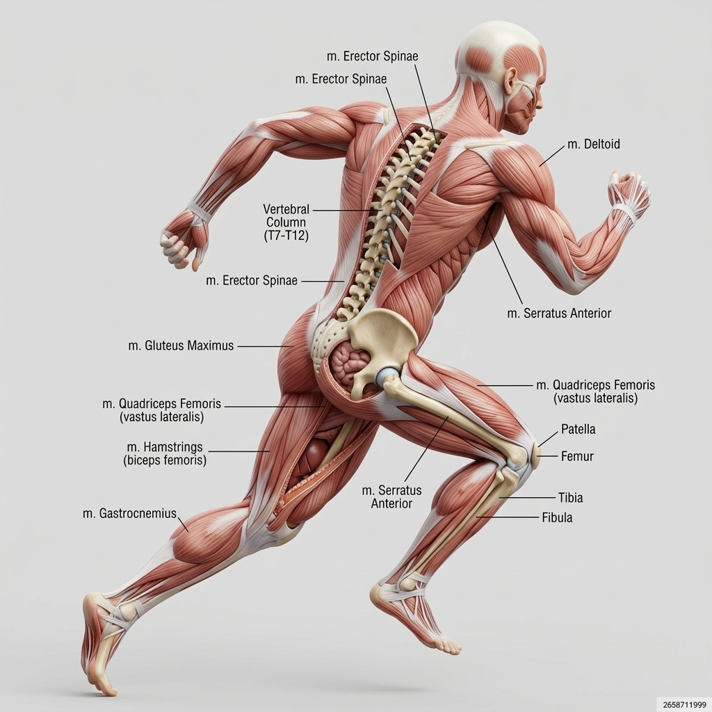
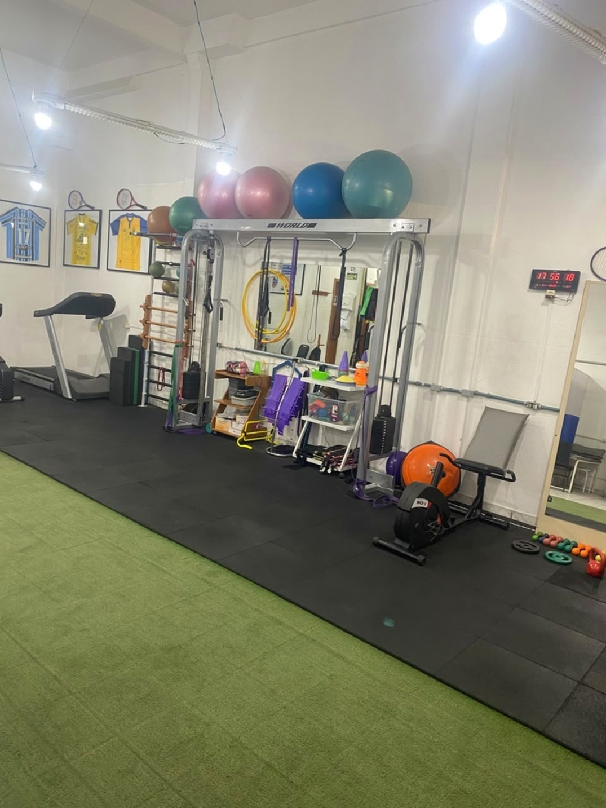
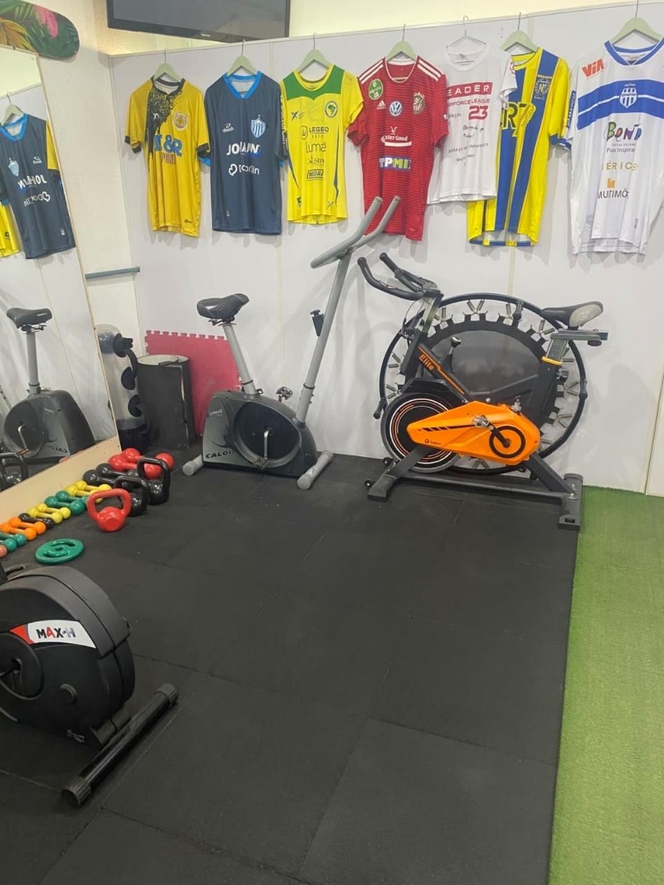
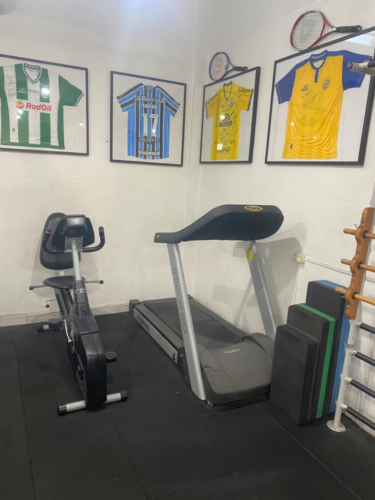
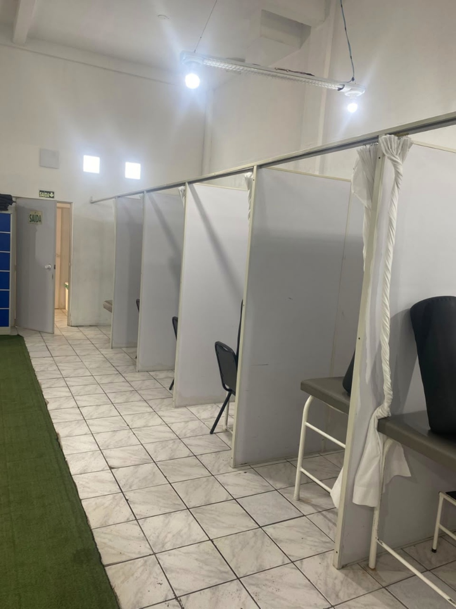
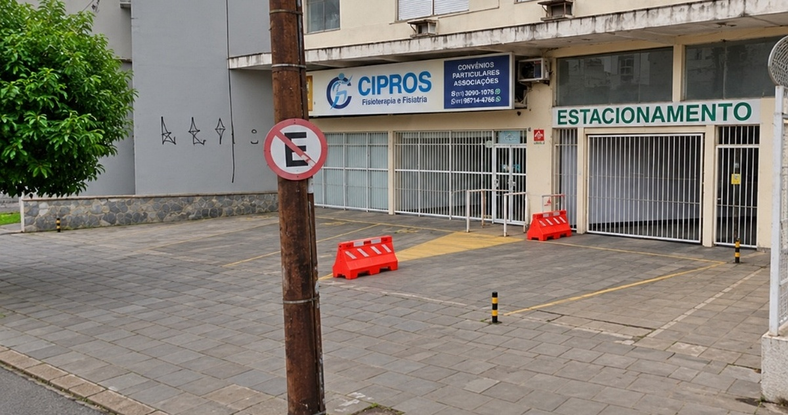
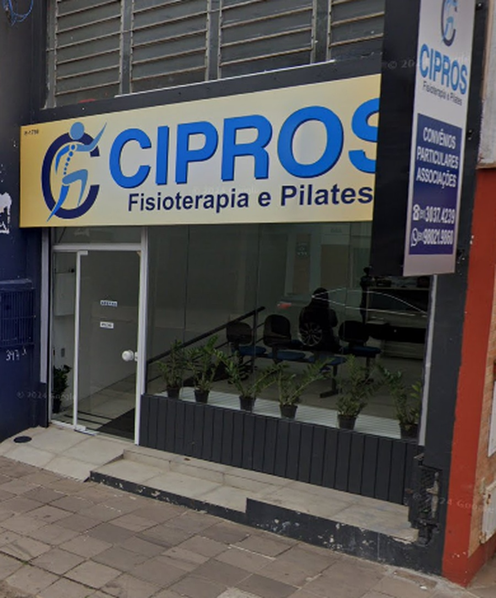

A CIPROS Fisioterapia e Fisiatria combina mais de 15 anos de tradição clínica, equipe multiprofissional altamente capacitada e infraestrutura completa em Porto Alegre e São Leopoldo para devolver o seu movimento, auxiliar no alívio de dores e promover sua qualidade de vida.

Profissionais extremamente capacitados e com vasta experiência em Traumato-Ortopedia, Coluna, Reabilitação Esportiva e Fisiatria clínica para cuidar de você com precisão técnica e acolhimento humano.
Estrutura em Porto Alegre (Av. Bento Gonçalves, Santana/Partenon) e em São Leopoldo (Rua Marquês do Herval, Centro), com ambientes climatizados, salas amplas e fácil acesso.
Você pode agendar sua avaliação diretamente com nossa equipe especializada. Realizamos avaliação funcional completa e estruturamos um plano terapêutico individualizado com agilidade.
Tratamentos personalizados iniciados após uma avaliação clínica detalhada, combinando técnicas manuais, exercícios terapêuticos e tecnologia de ponta para a sua recuperação motora.
Gire o modelo em 360°, controle as camadas de ossos, músculos e ligamentos, e clique em qualquer articulação para abrir o diagnóstico biomecânico detalhado:
Ambiente climatizado, espaçoso e planejado para o seu bem-estar e reabilitação completa. Contamos com ginásio funcional moderno, boxes privativos e equipamentos de eletroterapia de última geração:

Porto AlegreEspaço amplo com grama sintética e piso amortecedor, equipado com espaldar, bolas suíças, elásticos e sistema de polias para reabilitação ativa do movimento.

Porto AlegreBicicletas de precisão, minitrampolim e pesos livres para fortalecimento muscular, ganho de amplitude articular e recondicionamento cardiopulmonar.

Porto AlegreEsteira elétrica e bike horizontal para análise e reeducação da marcha. Galeria com camisas de atletas profissionais que confiam na recuperação da CIPROS.

Porto AlegreCabines privativas climatizadas com macas individuais, garantindo total privacidade, acolhimento e foco durante terapias manuais e sessões com TENS/FES.
A CIPROS Centro de Reabilitação é uma instituição de saúde especializada em fisioterapia ortopédica, neurológica, respiratória, esportiva e fisiatria, com unidades de atendimento em Porto Alegre e São Leopoldo.
Dispomos de sólida experiência clínica, equipe permanentemente capacitada e consultórios bem estruturados para promover a recuperação funcional, segurança e o bem-estar de nossos pacientes. Atendemos convênios médicos, pacientes particulares, associações e atendimentos domiciliares.
Atendemos ampla rede de convênios médicos renomados em Porto Alegre e São Leopoldo. Também oferecemos condições diferenciadas para pacientes particulares e reembolso.
Esclareça as dúvidas mais comuns sobre o início do seu tratamento, consultas e cobertura de convênios na CIPROS:
Venha nos visitar em uma de nossas clínicas em Porto Alegre ou São Leopoldo. Ambientes preparados com toda a estrutura necessária para a sua reabilitação:

Unidade Porto Alegre Com Estacionamento Próprio
Unidade São Leopoldo Fachada CentralPreencha o formulário abaixo para tirar dúvidas ou solicitar contato da nossa recepção para agendar sua consulta: